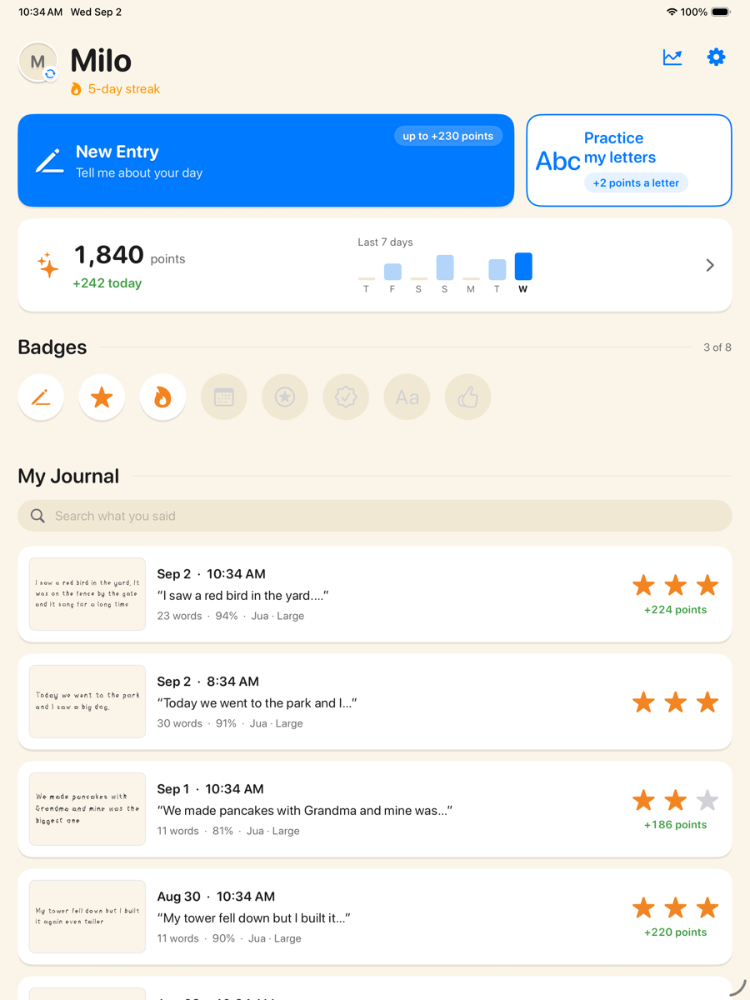

Handwritten Journal
A ten-minute writing center that runs itself and leaves something for the portfolio.
A child says what happened today, the words appear on a ruled page, and they write over them in their own hand. The app marks each letter as they write, teaches stroke order when a letter is drawn out of order, and keeps every finished page as a dated journal in the child's handwriting.
- Runs itself. No logins, no Wi-Fi, no class setup. A child picks their name and taps New Entry.
- Shared iPads work. Several children on one iPad, a profile each, with an optional PIN.
- Something for the portfolio. Any page, a month, or everything exports as a PDF, with the typed words alongside if you want them.
- The practice sheet is the warm-up. Every letter Aa to Zz and 0 to 9 draws itself stroke by stroke, with arrows to follow.

Set up in five minutes
Install from Apps and Books. Add a profile per child on each iPad and pick a letter style and size for the class. No accounts, nothing to configure.
Center time
Ten minutes at a station: say it, write it, tap I'm finished. Stopping part-way is fine — the words wait on the page for next time.
Conference time
Export a child's journal as a PDF for the portfolio or the parent meeting. Progress is kept per font-and-size setting, so a harder setting never looks like regression.
For the office
The children's work stays on the iPad. No account, no advertising, no server holding a child's writing. Speech recognition runs on the iPad and no audio is recorded. Nothing a child writes leaves the device unless an adult exports a PDF. The app sends anonymous crash reports and usage statistics to improve it; they identify no child and are never sold.
Cost. The basic app is always free. Distribute it through Apps and Books in Apple School Manager like any other app — nothing to license, no per-seat cost, no subscription. Some additional features may be paid in future; there are none in this version.
Paperwork. A one-page data statement is ready for district student-data forms; it lists exactly what the anonymous crash and usage data contains.
Free classroom pilot — autumn 2026
Five to ten K–2 classrooms, October to January. Install it on the classroom iPads, use it as a center or station for a few weeks, and fill in one short form at the end. Your feedback sets what is built next for classrooms, and you hear about it first.
What it does not have yet
No teacher dashboard, no class roster, no sync between iPads. iPad only — no Chromebook or Android. Print letters only, English only. We would rather you knew before you said yes.
hello@handwrittenjournal.app
Made by an independent developer